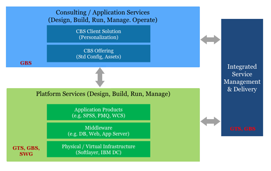
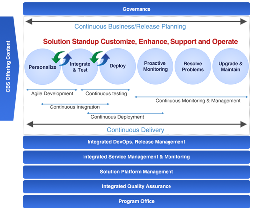
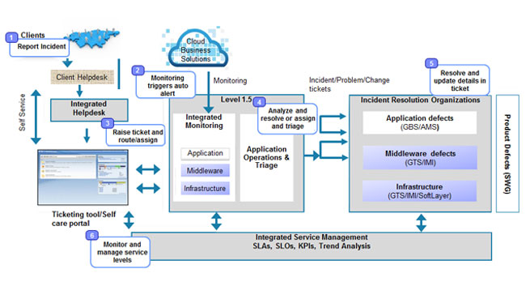
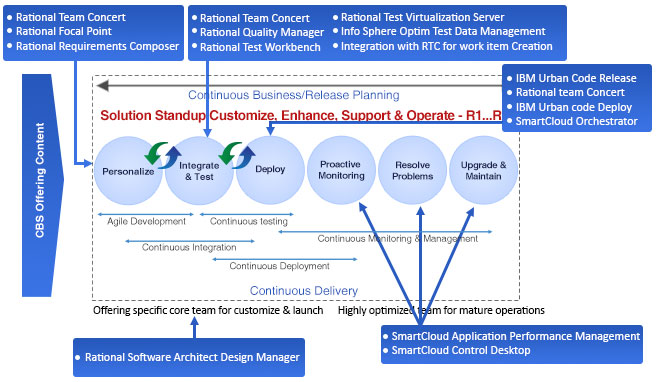

Speed
Ready to Engage and Deliver with AgilityPre-built Offerings, Rapid Solution Design, Prototyping, Contracting, Fully managed pre-designed infrastructure and services, seeded core team for each offering
Deep Expertise
Optimized offeringbased teamsDeep Offering and Industry specialization, Single integrated CBS delivery team, Knowledge retention and harvesting
Integrated Delivery
Seamless vertically integrated Personalize, Run and OperateExperience Design, Agile Method, DevOps, Automation, Self-Care Portal, Level 1.5, Helpdesk and Integrated Service Management
Cloud Business Solution Delivery
Cloud Business Solution Delivery involves multiple IBMproducts and services delivered in a seamless agileapproach under a single contract.

Key Design Principles

The key design principles of Cloud Business Solutions delivery construct are speed “time to value”, simplicity and integrated service management. Personalizing a CBS offering requires understanding client needs and personalizing the standard offering to client’s unique business requirements. We do it in multiple releases following Experience Design, Agile Methodology and DevOps with each release delivering incremental features. We start with a pre-defined template for the offering, and personalize it to align with the product vision of our customers.
Run and Operate
Run & Operate of a cloud business solution involves hosting the solution, providing application as well as platform management services. In CBS run & operate model, client can report an incident or request for a service through multiple channels like 24X7 helpdesk, Self-care portal or email. We have level 1.5 command center which is shared across CBS engagements for proactive monitoring, triaging and routing tickets, preventive maintenance based on analytics. Integrated service management to integrate the services from x-brand IBM teams to deliver a compelling and differentiated service to our customers.

DevOps

Integrated DevOps services are adopted across the lifecycle through a full suite of integrated tools extending the agile principles and our products are developed, tested, integrated, and deployed in increments, enabling continuous feedback from our clients. DevOps tools and services have been set up centrally on cloud so that it can consumed ‘as a service’ by all CBS engagements without having it set it individually.